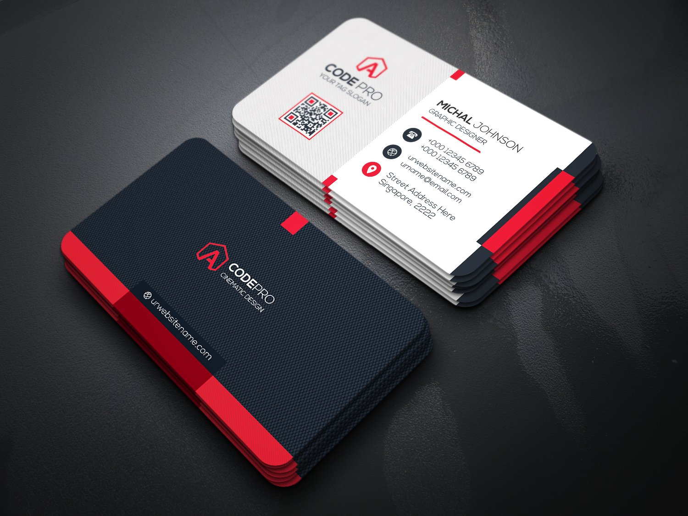

Graphics Design Jobs We Do




ALL TYPES OFF GRAPHICS DESIGN JOBS
Software Jobs
Desktop Applications Using Dot Net and C#
Website Design
We make websites for your business or company.
We are upgrading an IT online store soon.
Email us here : newgenerationithome@gmail.com